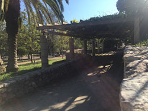

Aire Pur
Parc de Can Mercader
El parc de Can Mercader es localitza en l'antigament jardins de l'antic Palau de les famílies dels Comtes de Bell-lloc. Un dels seus majors atractius principals és el "trenet", que s'ha convertit en el símbol d'aquest parc, circula per un circuit de vies elèctriques en miniatura i que ofereix a tota la família pujar-hi i viure un viatge divertir. El Palau situat just al centre del parc va ser construït entre els anys 1865 i 1870.
